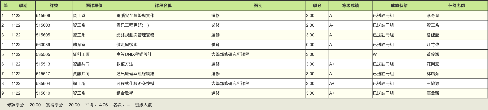

學期成績

電腦安全總整與實作
修李奇育教授開的，作業有4次，前3次都可以2人一組完成而且不難，基本上可以拿滿，第四次作業是單人的CTF解題，我的github上有題解跟解題過程，task1-3被教授改到超難，全班沒幾個解出來。
期中期末考都可以帶一頁A4大抄，我都只把考古題答案抄上去，幾乎沒讀最後考試平均只有70左右QQ，最後被自己搞到只有A-。
如果你很會考筆試而且考前願意花一堆時間做大抄的話應該可以輕鬆A+，但我超菜，整體來說算推。
網路規劃與管理實務
修曾建超教授開的，大家都叫這堂課CCNA，是系計中NET助教的必修課，可以學到很多網管知識，
修完就像把計網概的東西大複習，主要是助教帶學生在cisco的模擬軟體上實操各種功能。
我作業平均90左右，期中期末都各有一場上機考，我期中上機100,期末75，
助教都說期末筆試是這堂課最難的，今年班平均51、最高81、我77.5，但我也只是把每次Lab講義翻完而已，不知道為啥我認識的每個助教都說筆試很難。（我最後的學期成績是 A）。
總體來說要拿A的話，我覺得算簡單，作業跟上機要拿滿其實不難，只是我都在搞我自己，沒有花很多時間在這堂課上。
資訊工程專題(一)
教授只給我A-，原因："評分是依據資工系的一些標準建議。有參加校內競賽水準才能打85分以上。"
總結，我還不夠好，一學期做不完有參加校內競賽水準的內容QQ。
數值方法
莊榮宏教授開的，小考30%，期中期末都31%，4次小考幾乎都考考古（滿分30），
班平均15、班上有個醫學系的平均29，期中幾乎都考古，我93，期末就幾乎沒考古，我把時間拿去準備其他科，結果最後只有70左右。
最後班學期平均47，老師用非線性調分，我原始學期成績84被調到94，室友80變93，讀讀考古輕鬆A+。
通訊原理與無線網路
林靖茹教授開的，因為是第一年開，老師不太會教也沒有考古可以參考考試方向，我期中考大失敗只有60，
期末考之前老師有花1小時講解大概會考哪些觀念，跟帶我們解一些例題，我期末考91在班上算高的，最後學期成績是A。
這堂課我覺得老師教得不太好，我幾乎每部課程影片都看了2次以上，學期末還是覺得很空虛，還不如網路系統總整與實作。
教授自己立了一堆遲交規則，開學也說會嚴格執行，最後還是遲交根本沒差，蠻不爽的，
這堂課改考卷跟作業也很搞，助教方有一份正解，你寫的跟上面不一樣助教就算你錯，去要分也要不到，期中期末都有寫老師上課的口頭解釋被扣分==。
期中考考完之後平均很慘，老師也承諾期末後會根據全班最高學期成績調分（把那位同學調到99分），結果後來根本不是這樣調，
我原始87左右被加0.6，調分公式大概=(((N-57)/(Max-57))*(max-60))+60，自行帶入N=自己的分數，Max=96。
總結，未來想修這個教授的課盡量選有考古的，她上課重點跟考試重點差蠻多的==。
組合數學
高孟駿教授開的，數學爽課，會大爆調，作業50%，3次大考各20%，總分110，
主要難度都在考試，前2次期中考都分AB部分，A部分都是作業題跟投影片證明，B部分都超難，可以直接放棄那種，
期末考是80%從作業跟講義出，我考試分別67/66/72，作業拿滿最後學期成績96，輕鬆A+。
可程式化網路交換機
王協源教授開的，我專題主要是做這個的，只有5個人修，教授很失望QQ；
這是我修的第一堂碩班課，我在這堂課學到很多，最後輕鬆90拿了個A+。
體育－健走與慢跑
江竹偉開的跑步體育課，建議找朋友一起修，我邊緣人超無聊，只能自己無聊跑步。
總結
這學期GPA只有4.06，只能說超級可悲，只能怪自己太混，除了專題應該都是輕鬆A+的水課，還有高U修到一半覺得對寫unix底層的程式沒有很感興趣，加上沒人可以一起討論所以就直接W了
，我一直都在搞我自己，學期初阿罵過世讓我有點down，希望下學期可以好好讀書，不要再混了。
唯一的好消息應該是有面試上系計中助教，準備進去偷薪水><。